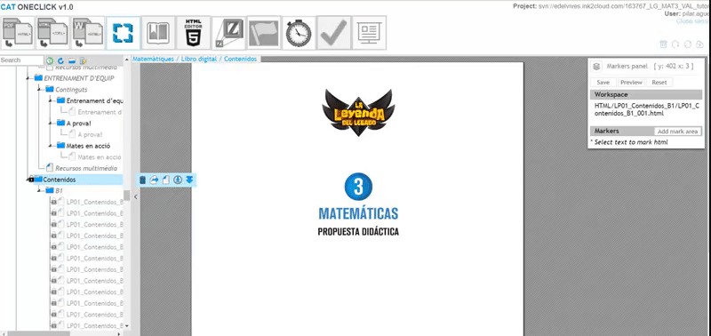

La herramienta PDF to XML (Manifest) del CAT permite generar el manifiesto de un libro. Dicho archivo es el que contiene los datos específicos de cada uno de los libros que permiten su inclusión en la plataforma digital.
Para poder logarse en el CAT es necesario disponer de:


Antes de utilizar la herramienta propiamente dicha, es necesario haber realizado el proceso de PDF to HTML explicado en el manual anterior.
Lo primero que se debe hacer al entrar al CAT es asegurarnos que el proyecto está perfectamente updateado:
Al igual que en el caso de la herramienta anterior, se trata de una operación sumamente importante, ya que, una vez montado el libro, realizar cambios a este respecto, supone en muchas ocasiones tener que iniciar todo el proceso desde cero.
Para comenzar a utilizar la herramienta objeto de este manual. Identificamos y pulsamos su botón de acceso:
Se iniciará el proceso de sincronización del CAT con el repositorio, y nos mostrará en pantalla todas las carpetas que contenga la carpeta HTML del repositorio.
En el ejemplo que nos ocupa, que es el montaje del libro del profesor, estarán correspondientes a las unidades del libro del alumno más la correspondiente al libro del profesor que habíamos preparado previamente:
Seleccionamos en el menú de la izquierda la carpeta del LP y la arrastramos hacia la parte derecha en la zona indicada como libro del profesor, pulsamos el botón generar y esperamos hasta que la herramienta nos indique que el proceso ha finalizado:
Pulsamos aceptar y updateamos el repositorio.
Verificamos que en la carpeta dummie\MANIFIESTOS se nos ha creado el archivo “imsmanifest_LP01_Contenidos_B1.xml”
Para poder enlazar el Libro del profesor (LP) al libro digital necesitamos utilizar la herramienta makers editor:
Pulsamos sobre el ítem denominado Libro digital para que nos salga la barra de herramientas lateral y escogemos la opción “Import from XML”
En la pantalla que se nos abre seleccionamos el manifiesto que acabamos de crear (imsmanifest_LP01_Contenidos_B1.xml):
Una vez seleccionado, hacemos la importación:
Cerramos la pantalla, y volvemos a la pantalla principal del Markers editor. Observaremos en el TOC que justo después de la última unidad del libro del alumno, se nos han introducido las páginas del Libro del Profesor:

Reconoceremos fácilmente estas páginas, ya que todas ellas llevan el icono de un candado, lo que indica que son contenidos que no se mostrarán en la versión alumno.
La edición de los títulos y epígrafes de este nuevo volumen dentro de nuestro libro digital es objeto del siguiente manual (Manual de Uso herramientas CAT: TOC. -Libro del profesor)
Es necesario comprobar que el manifiesto que se ha generado es correcto, verificando que cada una de las paginas del libro están perfectamente numeradas y en el orden correcto. En caso contrario, eliminaríamos en el TOC el ítem denominado “Contenidos” y volveríamos a iniciar el proceso, hasta que el LP esté correcto:
